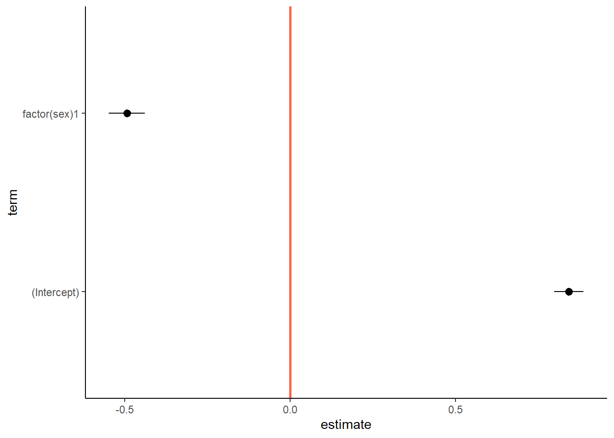
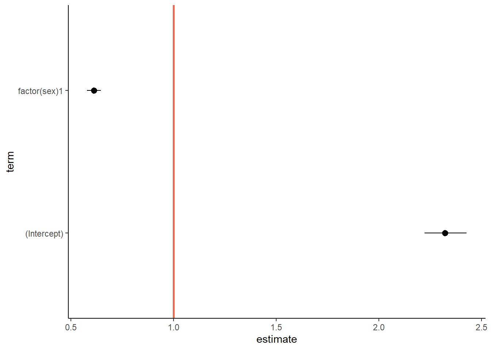
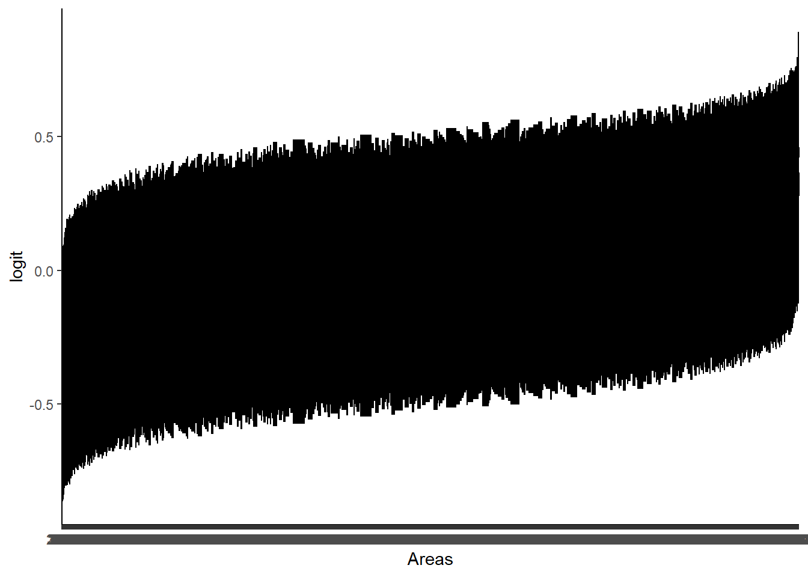

For this practical, we will use data from a sample of the Teaching
dataset of the Health Survey for England (2003-2005), which is available
here.
We will be fitting a series of binary logistic multilevel models for
the probability of being overweight or obese.
The traditional measure used to determine whether an adult is
overweight is the Body-Mass Index (BMI).
For an adult to be considered overweight, their BMI must be between
25 and 30. Meanwhile values over 30 are considered as “obese”.
Typical workflow setup and data preparation
1.1. Define a working directory
You can use any directory in your computer. As in the example
below:
setwd("C:/myfolder")
Remember to download the data to the folder you will define as
working directory, as this makes matters easier.
1.2. Load packages
You can always load packages later on, but it is a good practice to
load packages at the beginning of the session on the top of your script
or R markdown file.
In this practical, we will use the packages haven,
lme4 and ggplot2. Remember that if you haven’t
installed them before, you need to do so before you call the
library function:
install.packages("tidyverse")
install.packages("haven")
install.packages("lme4")
install.packages("ggplot2")
install.packages("dplyr")
install.packages("broom.mixed")
Then you load them as such:
library(haven)
library(lme4)
library(ggplot2)
library(dplyr)
library(tidyverse)
library(broom.mixed)
1.3. Read in data
You can download the data from the UKDS
website. There are four files in different formats. We will
be using the Stata dataset named: “hse_data_for_workshop.dta”.
To read this dataset into R, we need to use the package
haven:
hse <- read_dta("https://github.com/A-mora/MLM_summer-school/raw/main/data/hse_data_for_workshop.dta")
Select variables to use
The dataset has many different variables, but we’re not going to be
using all of them, so for easier work, we will select the following:
year, pserial, area,
bmival, sex, age and
ethnic.
year is the year where the measures were taken
pserial is the anonymised person identifier
area is the anonymised postcode of the person
bmival is the valid measure of BMI
sex coded 0 for Men and 1 for Women
age from 0 to 99
ethnic coded 1 for White; 2 for Mixed; 3 for Asian or
Asian British; 4 for Black or Black British and 5 for Chinese or any
other group
For a detailed description of these variables, have a look in the
documentation downloaded alongside with the data. Spoiler
alert: You will also find a complete set of materials for a
workshop on MLM.
To select variables, we (unsurprisingly) need to use the function
select of the dplyr package:
hse2 <- select(hse, year, pserial, area, bmival, sex, age, ethnic, bmival)
Preliminary tasks
We need to dichotomise our dependent variable bmival. As
we mentioned before, the categories “overweight” and “obese” are for
those with a BMI over 25 and 30, respectively, so we need to do the
following to our continuous BMI measure:
hse2$bmi_bin <- ifelse(hse2$bmival >= 25, 1, 0)
To check this is done correctly, you can run a simple frequency
table:
table(hse2$bmi_bin)
##
## 0 1
## 14751 15873
If there are more than two values there, then something must have
gone wrong.
Also, given that the BMI in children is done differently, we will
remove all under-18 individuals. We do this by typing:
hse2 <- hse2 %>% filter(age>18)
Task 1: Fit an empty model
We will start by fitting an empty multilevel model for the propensity
of being overweight in people nested in areas.
empty <- glmer(bmi_bin ~ 1 + (1|area), data = hse2, family = binomial("logit"))
summary(empty)
## Generalized linear mixed model fit by maximum likelihood (Laplace
## Approximation) [glmerMod]
## Family: binomial ( logit )
## Formula: bmi_bin ~ 1 + (1 | area)
## Data: hse2
##
## AIC BIC logLik deviance df.resid
## 31279.3 31295.5 -15637.6 31275.3 23895
##
## Scaled residuals:
## Min 1Q Median 3Q Max
## -1.6139 -1.2694 0.7115 0.7547 0.9025
##
## Random effects:
## Groups Name Variance Std.Dev.
## area (Intercept) 0.06817 0.2611
## Number of obs: 23897, groups: area, 1833
##
## Fixed effects:
## Estimate Std. Error z value Pr(>|z|)
## (Intercept) 0.5641 0.0153 36.87 <2e-16 ***
## ---
## Signif. codes: 0 '***' 0.001 '**' 0.01 '*' 0.05 '.' 0.1 ' ' 1
Questions:
1.1 What is the overall probability of being overweight?
Remember this formula:
\[logit(p_i)=\log\left(\frac{p_{i}}{1-p_{i}}\right)\]
To get the odds from the estimated coefficients, you use the exponent
function:
\[exp(\beta)=odds\]
Then, to convert to probability, you can do this:
\[p = \frac{odds}{1 + odds}\]
odds <- exp(empty@beta) # this is to retrieve the intercept from the model
prob <- odds/(1 + odds) # to estimate the overall probability
prob # to print the result to the screen
## [1] 0.6374097
1.2 What is the VPC for this model?
\[VPC = \frac{\sigma_u^2}{\sigma_u^2 +
\sigma_e^2*}\] where \(\sigma_e^2*=
\frac{\pi^2}{3} \approx 3.29\)
lev2var <- as.numeric(VarCorr(empty)) # this is to retrieve the level 2 variance from the model
(lev2var)/(lev2var+3.29) # VPC
## [1] 0.02029849
Task 2: Is the MLM better than a single-level model?
To assess the statistical significance of the MLM, we need to compare
it to a single-level model. To fit a single-level model, we type:
single <- glm(bmi_bin ~ 1 , data = hse2, family = binomial("logit"))
summary(single)
##
## Call:
## glm(formula = bmi_bin ~ 1, family = binomial("logit"), data = hse2)
##
## Deviance Residuals:
## Min 1Q Median 3Q Max
## -1.4234 -1.4234 0.9499 0.9499 0.9499
##
## Coefficients:
## Estimate Std. Error z value Pr(>|z|)
## (Intercept) 0.56193 0.01345 41.77 <2e-16 ***
## ---
## Signif. codes: 0 '***' 0.001 '**' 0.01 '*' 0.05 '.' 0.1 ' ' 1
##
## (Dispersion parameter for binomial family taken to be 1)
##
## Null deviance: 31314 on 23896 degrees of freedom
## Residual deviance: 31314 on 23896 degrees of freedom
## (4034 observations deleted due to missingness)
## AIC: 31316
##
## Number of Fisher Scoring iterations: 4
These results are not very interesting in themselves, so we move on
extract the loglikelihood and compare to the MLM.
L1 <- as.numeric(logLik(single)) # store this as numerical to re-use
L2 <- as.numeric(logLik(empty))
(D <- 2*(L2-L1)) # this is the deviance, we put it within brackets to print it immediately
## [1] 38.42078
pchisq(q=D, df=1, lower.tail=F) # To find the p-value
## [1] 5.702211e-10
Question
2.1. Is the addition of the area level statistically significant?
2.2. What does this mean in practice?
Task 3: Random intercepts model
Just like in the case of normally-distributed responses, we can fit a
random intercepts model by adding explanatory
variables.
We want to find out whether there any differences between males and
females on the probability of being overweight.
rand_int <- glmer(bmi_bin ~ factor(sex) + (1|area), data = hse2, family = binomial("logit"))
summary(rand_int)
## Generalized linear mixed model fit by maximum likelihood (Laplace
## Approximation) [glmerMod]
## Family: binomial ( logit )
## Formula: bmi_bin ~ factor(sex) + (1 | area)
## Data: hse2
##
## AIC BIC logLik deviance df.resid
## 30962.2 30986.4 -15478.1 30956.2 23894
##
## Scaled residuals:
## Min 1Q Median 3Q Max
## -1.9006 -1.1735 0.6406 0.7871 1.0249
##
## Random effects:
## Groups Name Variance Std.Dev.
## area (Intercept) 0.07516 0.2742
## Number of obs: 23897, groups: area, 1833
##
## Fixed effects:
## Estimate Std. Error z value Pr(>|z|)
## (Intercept) 0.84265 0.02246 37.52 <2e-16 ***
## factor(sex)1 -0.49290 0.02781 -17.72 <2e-16 ***
## ---
## Signif. codes: 0 '***' 0.001 '**' 0.01 '*' 0.05 '.' 0.1 ' ' 1
##
## Correlation of Fixed Effects:
## (Intr)
## factor(sx)1 -0.722
We can also get a more “human-readable” version of the table of
coefficients by using the package broom.mixed:
(m1 <- tidy(rand_int, effects = "fixed",
conf.int=TRUE,
exponentiate=FALSE))
## # A tibble: 2 × 8
## effect term estimate std.error statistic p.value conf.low conf.high
## <chr> <chr> <dbl> <dbl> <dbl> <dbl> <dbl> <dbl>
## 1 fixed (Intercept) 0.843 0.0225 37.5 0 0.799 0.887
## 2 fixed factor(sex)1 -0.493 0.0278 -17.7 2.78e-70 -0.547 -0.438
You can plot these for easier inspection:
(m1_plot <-
ggplot(m1,
mapping = aes(x= estimate,
y = term,
xmin = conf.low,
xmax = conf.high)) +
geom_vline(xintercept = 0, color = "tomato", size =1) +
geom_pointrange() +
theme_classic())
## Warning: Using `size` aesthetic for lines was deprecated in ggplot2 3.4.0.
## ℹ Please use `linewidth` instead.

If you want to obtain the odds ratios, you can change the option
exponentiate to TRUE.
(m1_odds <- tidy(rand_int, effects = "fixed",
conf.int=TRUE,
exponentiate=TRUE))
## # A tibble: 2 × 8
## effect term estimate std.error statistic p.value conf.low conf.high
## <chr> <chr> <dbl> <dbl> <dbl> <dbl> <dbl> <dbl>
## 1 fixed (Intercept) 2.32 0.0522 37.5 0 2.22 2.43
## 2 fixed factor(sex)1 0.611 0.0170 -17.7 2.78e-70 0.578 0.645
Unsurprisingly, you can plot the odds for easier inspection:
(m1_odds_plot <-
ggplot(m1_odds,
mapping = aes(x= estimate,
y = term,
xmin = conf.low,
xmax = conf.high)) +
geom_vline(xintercept = 1, color = "tomato", size =1) +
geom_pointrange() +
theme_classic())

Question:
3.1. What is the effect of sex on being overweight?
3.2. What is the probability of a female being overweight in this
sample?
Task 4: Area-specific estimates
Just like in task 5 of practical 2, we can retrieve the residuals
from the random intercepts and plot them to find out which
areas have more or less than average people who are overweight.
This is what is sometimes called in the literature a “Caterpillar
plot”.
m2 <- tidy(rand_int, effects = "ran_vals",
conf.int=TRUE,
exponentiate=FALSE)
(RE <- m2 %>%
mutate(level = fct_reorder(level, estimate)) %>%
ggplot( mapping = aes(x= estimate,
y = level,
xmin = conf.low,
xmax = conf.high)) +
geom_vline(xintercept = 0, color = "tomato", size =1) +
coord_flip() +
labs(x = "logit",
y = "Areas") +
geom_pointrange() +
theme_classic())

Question:
4.1. Are there any areas that are significantly above or below
average?
Additional tasks
You can borrow from practical 2 and repeat some of the tasks there,
such as:
LS0tDQp0aXRsZTogIkludHJvIHRvIE1MTTogUHJhY3RpY2FsIDMiDQphdXRob3I6IEFuYSBNb3JhbGVzLUfDs21leiBhbmQgUGF0cmljaW8gVHJvbmNvc28gDQpkYXRlOiAiSnVuZSAyMDIzIg0Kb3V0cHV0OiANCiAgaHRtbF9kb2N1bWVudDoNCiAgICBjb2RlX2Rvd25sb2FkOiB5ZXMNCiAgICBoaWdobGlnaHRlcjogbnVsbA0KICAgIHRoZW1lOiBjb3Ntbw0KICAgIHRvYzogeWVzDQogICAgdG9jX2RlcHRoOiA0DQogICAgdG9jX2Zsb2F0OiB5ZXMNCiAgICBmb250c2l6ZTogMTJwdA0KLS0tDQoNCmBgYHtyIHNldHVwLCBpbmNsdWRlPUZBTFNFfQ0Ka25pdHI6Om9wdHNfY2h1bmskc2V0KGVjaG8gPSBUUlVFKQ0KYGBgDQoNCg0KRm9yIHRoaXMgcHJhY3RpY2FsLCB3ZSB3aWxsIHVzZSBkYXRhIGZyb20gYSBzYW1wbGUgb2YgdGhlIFRlYWNoaW5nIGRhdGFzZXQgb2YgdGhlIEhlYWx0aCBTdXJ2ZXkgZm9yIEVuZ2xhbmQgKDIwMDMtMjAwNSksIHdoaWNoIGlzDQphdmFpbGFibGUgWyoqaGVyZSoqXShodHRwczovL2JldGEudWtkYXRhc2VydmljZS5hYy51ay9kYXRhY2F0YWxvZ3VlL3N0dWRpZXMvc3R1ZHk/aWQ9Njc2NSkuDQoNCldlIHdpbGwgYmUgZml0dGluZyBhIHNlcmllcyBvZiBiaW5hcnkgbG9naXN0aWMgbXVsdGlsZXZlbCBtb2RlbHMgZm9yIHRoZSBwcm9iYWJpbGl0eSBvZiBiZWluZyBvdmVyd2VpZ2h0IG9yIG9iZXNlLg0KDQpUaGUgdHJhZGl0aW9uYWwgbWVhc3VyZSB1c2VkIHRvIGRldGVybWluZSB3aGV0aGVyIGFuIGFkdWx0IGlzIG92ZXJ3ZWlnaHQgaXMgdGhlIEJvZHktTWFzcyBJbmRleCAoQk1JKS4NCg0KRm9yIGFuIGFkdWx0IHRvIGJlIGNvbnNpZGVyZWQgb3ZlcndlaWdodCwgdGhlaXIgQk1JIG11c3QgYmUgYmV0d2VlbiAyNSBhbmQgMzAuIE1lYW53aGlsZSB2YWx1ZXMgb3ZlciAzMCBhcmUgY29uc2lkZXJlZCBhcyAib2Jlc2UiLg0KDQo8YnI+DQoNCioqKg0KDQojIFR5cGljYWwgd29ya2Zsb3cgc2V0dXAgYW5kIGRhdGEgcHJlcGFyYXRpb24NCg0KIyMgMS4xLiBEZWZpbmUgYSB3b3JraW5nIGRpcmVjdG9yeQ0KDQpZb3UgY2FuIHVzZSBhbnkgZGlyZWN0b3J5IGluIHlvdXIgY29tcHV0ZXIuIEFzIGluIHRoZSBleGFtcGxlIGJlbG93Og0KDQpgYGB7ciwgZXZhbD1GfQ0Kc2V0d2QoIkM6L215Zm9sZGVyIikNCmBgYA0KDQpSZW1lbWJlciB0byBkb3dubG9hZCB0aGUgZGF0YSB0byB0aGUgZm9sZGVyIHlvdSB3aWxsIGRlZmluZSBhcyB3b3JraW5nIGRpcmVjdG9yeSwgYXMgdGhpcyBtYWtlcyBtYXR0ZXJzIGVhc2llci4NCg0KIyMgMS4yLiBMb2FkIHBhY2thZ2VzDQoNCllvdSBjYW4gYWx3YXlzIGxvYWQgcGFja2FnZXMgbGF0ZXIgb24sIGJ1dCBpdCBpcyBhIGdvb2QgcHJhY3RpY2UgdG8gbG9hZCBwYWNrYWdlcyBhdCB0aGUgYmVnaW5uaW5nIG9mIHRoZSBzZXNzaW9uIG9uIHRoZSB0b3Agb2YgeW91ciBzY3JpcHQgb3IgUiBtYXJrZG93biBmaWxlLg0KDQpJbiB0aGlzIHByYWN0aWNhbCwgd2Ugd2lsbCB1c2UgdGhlIHBhY2thZ2VzIGBoYXZlbmAsIGBsbWU0YCBhbmQgYGdncGxvdDJgLiBSZW1lbWJlciB0aGF0IGlmIHlvdSBoYXZlbid0IGluc3RhbGxlZCB0aGVtIGJlZm9yZSwgeW91IG5lZWQgdG8gZG8gc28gYmVmb3JlIHlvdSBjYWxsIHRoZSBgbGlicmFyeWAgZnVuY3Rpb246DQoNCmBgYHt9DQppbnN0YWxsLnBhY2thZ2VzKCJ0aWR5dmVyc2UiKQ0KaW5zdGFsbC5wYWNrYWdlcygiaGF2ZW4iKQ0KaW5zdGFsbC5wYWNrYWdlcygibG1lNCIpDQppbnN0YWxsLnBhY2thZ2VzKCJnZ3Bsb3QyIikNCmluc3RhbGwucGFja2FnZXMoImRwbHlyIikNCmluc3RhbGwucGFja2FnZXMoImJyb29tLm1peGVkIikNCmBgYA0KDQpUaGVuIHlvdSBsb2FkIHRoZW0gYXMgc3VjaDoNCg0KYGBge3IsIHdhcm5pbmc9RiwgbWVzc2FnZT1GfQ0KbGlicmFyeShoYXZlbikNCmxpYnJhcnkobG1lNCkNCmxpYnJhcnkoZ2dwbG90MikNCmxpYnJhcnkoZHBseXIpDQpsaWJyYXJ5KHRpZHl2ZXJzZSkNCmxpYnJhcnkoYnJvb20ubWl4ZWQpDQpgYGANCg0KIyMgMS4zLiBSZWFkIGluIGRhdGEgDQoNCllvdSBjYW4gZG93bmxvYWQgdGhlIGRhdGEgZnJvbSAgdGhlIFsqKlVLRFMgd2Vic2l0ZSoqXShodHRwczovL2JldGEudWtkYXRhc2VydmljZS5hYy51ay9kYXRhY2F0YWxvZ3VlL3N0dWRpZXMvc3R1ZHk/aWQ9Njc2NSkuIFRoZXJlIGFyZSBmb3VyIGZpbGVzIGluIGRpZmZlcmVudCBmb3JtYXRzLiBXZSB3aWxsIGJlIHVzaW5nIHRoZSBTdGF0YSBkYXRhc2V0IG5hbWVkOiAiaHNlX2RhdGFfZm9yX3dvcmtzaG9wLmR0YSIuDQoNClRvIHJlYWQgdGhpcyBkYXRhc2V0IGludG8gUiwgd2UgbmVlZCB0byB1c2UgdGhlIHBhY2thZ2UgYGhhdmVuYDoNCg0KDQpgYGB7ciwgd2FybmluZz1GLCBtZXNzYWdlPUZ9DQpoc2UgPC0gcmVhZF9kdGEoImh0dHBzOi8vZ2l0aHViLmNvbS9BLW1vcmEvTUxNX3N1bW1lci1zY2hvb2wvcmF3L21haW4vZGF0YS9oc2VfZGF0YV9mb3Jfd29ya3Nob3AuZHRhIikNCmBgYA0KDQo8YnI+DQoNCioqKg0KDQojIyBTZWxlY3QgdmFyaWFibGVzIHRvIHVzZQ0KDQpUaGUgZGF0YXNldCBoYXMgbWFueSBkaWZmZXJlbnQgdmFyaWFibGVzLCBidXQgd2UncmUgbm90IGdvaW5nIHRvIGJlIHVzaW5nIGFsbCBvZiB0aGVtLCBzbyBmb3IgZWFzaWVyIHdvcmssIHdlIHdpbGwgc2VsZWN0IHRoZSBmb2xsb3dpbmc6IGB5ZWFyYCwgYHBzZXJpYWxgLCBgYXJlYWAsIGBibWl2YWxgLCBgc2V4YCwgYGFnZWAgYW5kIGBldGhuaWNgLg0KDQpgeWVhcmAgaXMgdGhlIHllYXIgd2hlcmUgdGhlIG1lYXN1cmVzIHdlcmUgdGFrZW4NCg0KYHBzZXJpYWxgIGlzIHRoZSBhbm9ueW1pc2VkIHBlcnNvbiBpZGVudGlmaWVyDQoNCmBhcmVhYCBpcyB0aGUgYW5vbnltaXNlZCBwb3N0Y29kZSBvZiB0aGUgcGVyc29uDQoNCmBibWl2YWxgIGlzIHRoZSB2YWxpZCBtZWFzdXJlIG9mIEJNSQ0KDQpgc2V4YCBjb2RlZCAwIGZvciBNZW4gYW5kIDEgZm9yIFdvbWVuDQoNCmBhZ2VgIGZyb20gMCB0byA5OQ0KDQpgZXRobmljYCBjb2RlZCAxIGZvciBXaGl0ZTsgDQogICAgICAgICAgICAgICAyIGZvciBNaXhlZDsgDQogICAgICAgICAgICAgICAzIGZvciBBc2lhbiBvciBBc2lhbiBCcml0aXNoOyANCiAgICAgICAgICAgICAgIDQgZm9yIEJsYWNrIG9yIEJsYWNrIEJyaXRpc2ggYW5kIA0KICAgICAgICAgICAgICAgNSBmb3IgQ2hpbmVzZSBvciBhbnkgb3RoZXIgZ3JvdXANCg0KRm9yIGEgZGV0YWlsZWQgZGVzY3JpcHRpb24gb2YgdGhlc2UgdmFyaWFibGVzLCBoYXZlIGEgbG9vayBpbiB0aGUgZG9jdW1lbnRhdGlvbiBkb3dubG9hZGVkIGFsb25nc2lkZSB3aXRoIHRoZSBkYXRhLiANCioqU3BvaWxlciBhbGVydDoqKiBZb3Ugd2lsbCBhbHNvIGZpbmQgYSBjb21wbGV0ZSBzZXQgb2YgbWF0ZXJpYWxzIGZvciBhIHdvcmtzaG9wIG9uIE1MTS4NCg0KVG8gc2VsZWN0IHZhcmlhYmxlcywgd2UgKHVuc3VycHJpc2luZ2x5KSBuZWVkIHRvIHVzZSB0aGUgZnVuY3Rpb24gYHNlbGVjdGAgb2YgdGhlIGBkcGx5cmAgcGFja2FnZToNCg0KYGBge3IsIHdhcm5pbmc9RiwgbWVzc2FnZT1GfQ0KDQpoc2UyIDwtIHNlbGVjdChoc2UsIHllYXIsIHBzZXJpYWwsIGFyZWEsIGJtaXZhbCwgc2V4LCBhZ2UsIGV0aG5pYywgYm1pdmFsKSANCg0KYGBgDQoNCjxicj4NCg0KKioqDQojIFByZWxpbWluYXJ5IHRhc2tzDQoNCldlIG5lZWQgdG8gZGljaG90b21pc2Ugb3VyIGRlcGVuZGVudCB2YXJpYWJsZSBgYm1pdmFsYC4gQXMgd2UgbWVudGlvbmVkIGJlZm9yZSwgdGhlIGNhdGVnb3JpZXMgIm92ZXJ3ZWlnaHQiIGFuZCAib2Jlc2UiIGFyZSBmb3IgdGhvc2Ugd2l0aCBhIEJNSSBvdmVyIDI1IGFuZCAzMCwgcmVzcGVjdGl2ZWx5LCBzbyB3ZSBuZWVkIHRvIGRvIHRoZSBmb2xsb3dpbmcgdG8gb3VyIGNvbnRpbnVvdXMgQk1JIG1lYXN1cmU6DQoNCmBgYHtyLCB3YXJuaW5nPUYsIG1lc3NhZ2U9Rn0NCmhzZTIkYm1pX2JpbiA8LSBpZmVsc2UoaHNlMiRibWl2YWwgPj0gMjUsIDEsIDApDQpgYGANCg0KVG8gY2hlY2sgdGhpcyBpcyBkb25lIGNvcnJlY3RseSwgeW91IGNhbiBydW4gYSBzaW1wbGUgZnJlcXVlbmN5IHRhYmxlOg0KDQpgYGB7ciwgd2FybmluZz1GLCBtZXNzYWdlPUZ9DQp0YWJsZShoc2UyJGJtaV9iaW4pDQpgYGANCg0KSWYgdGhlcmUgYXJlIG1vcmUgdGhhbiB0d28gdmFsdWVzIHRoZXJlLCB0aGVuIHNvbWV0aGluZyBtdXN0IGhhdmUgZ29uZSB3cm9uZy4NCg0KQWxzbywgZ2l2ZW4gdGhhdCB0aGUgQk1JIGluIGNoaWxkcmVuIGlzIGRvbmUgZGlmZmVyZW50bHksIHdlIHdpbGwgcmVtb3ZlIGFsbCB1bmRlci0xOCBpbmRpdmlkdWFscy4gV2UgZG8gdGhpcyBieSB0eXBpbmc6DQoNCmBgYHtyLCB3YXJuaW5nPUYsIG1lc3NhZ2U9Rn0NCmhzZTIgPC0gaHNlMiAlPiUgZmlsdGVyKGFnZT4xOCkNCmBgYA0KDQojIFRhc2sgMTogRml0IGFuIGVtcHR5IG1vZGVsDQoNCldlIHdpbGwgc3RhcnQgYnkgZml0dGluZyBhbiBlbXB0eSBtdWx0aWxldmVsIG1vZGVsIGZvciB0aGUgcHJvcGVuc2l0eSBvZiBiZWluZyBvdmVyd2VpZ2h0IGluIHBlb3BsZSBuZXN0ZWQgaW4gYXJlYXMuDQoNCmBgYHtyLCB3YXJuaW5nPUYsIG1lc3NhZ2U9Rn0NCmVtcHR5IDwtIGdsbWVyKGJtaV9iaW4gfiAxICsgKDF8YXJlYSksIGRhdGEgPSBoc2UyLCBmYW1pbHkgPSBiaW5vbWlhbCgibG9naXQiKSkNCg0Kc3VtbWFyeShlbXB0eSkNCmBgYA0KDQoNCjxicj4NCg0KIyMjIFF1ZXN0aW9uczoNCg0KMS4xIFdoYXQgaXMgdGhlIG92ZXJhbGwgcHJvYmFiaWxpdHkgb2YgYmVpbmcgb3ZlcndlaWdodD8NCg0KUmVtZW1iZXIgdGhpcyBmb3JtdWxhOg0KDQokJGxvZ2l0KHBfaSk9XGxvZ1xsZWZ0KFxmcmFje3Bfe2l9fXsxLXBfe2l9fVxyaWdodCkkJA0KVG8gZ2V0IHRoZSBvZGRzIGZyb20gdGhlIGVzdGltYXRlZCBjb2VmZmljaWVudHMsIHlvdSB1c2UgdGhlIGV4cG9uZW50IGZ1bmN0aW9uOg0KDQokJGV4cChcYmV0YSk9b2RkcyQkDQoNClRoZW4sIHRvIGNvbnZlcnQgdG8gcHJvYmFiaWxpdHksIHlvdSBjYW4gZG8gdGhpczoNCg0KJCRwID0gXGZyYWN7b2Rkc317MSArIG9kZHN9JCQNCmBgYHtyLCB3YXJuaW5nPUYsIG1lc3NhZ2U9Rn0NCg0Kb2RkcyA8LSBleHAoZW1wdHlAYmV0YSkgIyB0aGlzIGlzIHRvIHJldHJpZXZlIHRoZSBpbnRlcmNlcHQgZnJvbSB0aGUgbW9kZWwNCg0KcHJvYiA8LSBvZGRzLygxICsgb2RkcykgIyB0byBlc3RpbWF0ZSB0aGUgb3ZlcmFsbCBwcm9iYWJpbGl0eQ0KDQpwcm9iICMgdG8gcHJpbnQgdGhlIHJlc3VsdCB0byB0aGUgc2NyZWVuDQpgYGANCg0KDQoxLjIgV2hhdCBpcyB0aGUgVlBDIGZvciB0aGlzIG1vZGVsPw0KDQokJFZQQyA9IFxmcmFje1xzaWdtYV91XjJ9e1xzaWdtYV91XjIgKyBcc2lnbWFfZV4yKn0kJA0Kd2hlcmUgJFxzaWdtYV9lXjIqPSBcZnJhY3tccGleMn17M30gXGFwcHJveCAzLjI5JA0KDQpgYGB7ciwgd2FybmluZz1GLCBtZXNzYWdlPUZ9DQpsZXYydmFyIDwtIGFzLm51bWVyaWMoVmFyQ29ycihlbXB0eSkpICMgdGhpcyBpcyB0byByZXRyaWV2ZSB0aGUgbGV2ZWwgMiB2YXJpYW5jZSBmcm9tIHRoZSBtb2RlbA0KDQoobGV2MnZhcikvKGxldjJ2YXIrMy4yOSkgIyBWUEMNCmBgYA0KDQo8YnI+DQoNCioqKg0KDQojIFRhc2sgMjogSXMgdGhlIE1MTSBiZXR0ZXIgdGhhbiBhIHNpbmdsZS1sZXZlbCBtb2RlbD8NCg0KVG8gYXNzZXNzIHRoZSBzdGF0aXN0aWNhbCBzaWduaWZpY2FuY2Ugb2YgdGhlIE1MTSwgd2UgbmVlZCB0byBjb21wYXJlIGl0IHRvIGEgc2luZ2xlLWxldmVsIG1vZGVsLiBUbyBmaXQgYSBzaW5nbGUtbGV2ZWwgbW9kZWwsIHdlIHR5cGU6DQoNCmBgYHtyLCB3YXJuaW5nPUYsIG1lc3NhZ2U9Rn0NCg0Kc2luZ2xlIDwtIGdsbShibWlfYmluIH4gMSAsIGRhdGEgPSBoc2UyLCBmYW1pbHkgPSBiaW5vbWlhbCgibG9naXQiKSkNCg0Kc3VtbWFyeShzaW5nbGUpDQoNCmBgYA0KDQpUaGVzZSByZXN1bHRzIGFyZSBub3QgdmVyeSBpbnRlcmVzdGluZyBpbiB0aGVtc2VsdmVzLCBzbyB3ZSBtb3ZlIG9uIGV4dHJhY3QgdGhlIGxvZ2xpa2VsaWhvb2QgYW5kIGNvbXBhcmUgdG8gdGhlIE1MTS4NCg0KYGBge3IsIHdhcm5pbmc9RiwgbWVzc2FnZT1GfQ0KDQpMMSA8LSBhcy5udW1lcmljKGxvZ0xpayhzaW5nbGUpKSAjIHN0b3JlIHRoaXMgYXMgbnVtZXJpY2FsIHRvIHJlLXVzZQ0KTDIgPC0gYXMubnVtZXJpYyhsb2dMaWsoZW1wdHkpKQ0KDQooRCA8LSAyKihMMi1MMSkpICMgdGhpcyBpcyB0aGUgZGV2aWFuY2UsIHdlIHB1dCBpdCB3aXRoaW4gYnJhY2tldHMgdG8gcHJpbnQgaXQgaW1tZWRpYXRlbHkNCg0KcGNoaXNxKHE9RCwgZGY9MSwgbG93ZXIudGFpbD1GKSAjIFRvIGZpbmQgdGhlIHAtdmFsdWUNCg0KYGBgDQoNCiMjIyBRdWVzdGlvbg0KDQoyLjEuIElzIHRoZSBhZGRpdGlvbiBvZiB0aGUgYXJlYSBsZXZlbCBzdGF0aXN0aWNhbGx5IHNpZ25pZmljYW50Pw0KDQoyLjIuIFdoYXQgZG9lcyB0aGlzIG1lYW4gaW4gcHJhY3RpY2U/DQoNCioqKg0KDQojIFRhc2sgMzogUmFuZG9tIGludGVyY2VwdHMgbW9kZWwNCg0KSnVzdCBsaWtlIGluIHRoZSBjYXNlIG9mIG5vcm1hbGx5LWRpc3RyaWJ1dGVkIHJlc3BvbnNlcywgd2UgY2FuIGZpdCBhIGByYW5kb20gaW50ZXJjZXB0c2AgbW9kZWwgYnkgYWRkaW5nIGV4cGxhbmF0b3J5IHZhcmlhYmxlcy4NCg0KV2Ugd2FudCB0byBmaW5kIG91dCB3aGV0aGVyIHRoZXJlIGFueSBkaWZmZXJlbmNlcyBiZXR3ZWVuIG1hbGVzIGFuZCBmZW1hbGVzIG9uIHRoZSBwcm9iYWJpbGl0eSBvZiBiZWluZyBvdmVyd2VpZ2h0Lg0KDQpgYGB7ciwgd2FybmluZz1ULCBtZXNzYWdlPUZ9DQpyYW5kX2ludCA8LSBnbG1lcihibWlfYmluIH4gZmFjdG9yKHNleCkgKyAoMXxhcmVhKSwgZGF0YSA9IGhzZTIsIGZhbWlseSA9IGJpbm9taWFsKCJsb2dpdCIpKQ0KDQpzdW1tYXJ5KHJhbmRfaW50KQ0KYGBgDQoNCldlIGNhbiBhbHNvIGdldCBhIG1vcmUgImh1bWFuLXJlYWRhYmxlIiB2ZXJzaW9uIG9mIHRoZSB0YWJsZSBvZiBjb2VmZmljaWVudHMgYnkgdXNpbmcgdGhlIHBhY2thZ2UgYGJyb29tLm1peGVkYDoNCg0KYGBge3IsIHdhcm5pbmc9RiwgbWVzc2FnZT1GfQ0KKG0xIDwtIHRpZHkocmFuZF9pbnQsIGVmZmVjdHMgPSAiZml4ZWQiLA0KICAgICAgICAgIGNvbmYuaW50PVRSVUUsIA0KICAgICAgICAgIGV4cG9uZW50aWF0ZT1GQUxTRSkpDQpgYGANCg0KWW91IGNhbiBwbG90IHRoZXNlIGZvciBlYXNpZXIgaW5zcGVjdGlvbjoNCg0KYGBge3J9DQoobTFfcGxvdCA8LSANCiAgICBnZ3Bsb3QobTEsIA0KICAgICAgICAgICBtYXBwaW5nID0gYWVzKHg9IGVzdGltYXRlLA0KICAgICAgICAgICAgICAgICAgICAgICAgIHkgPSB0ZXJtLCANCiAgICAgICAgICAgICAgICAgICAgICAgICB4bWluID0gY29uZi5sb3csIA0KICAgICAgICAgICAgICAgICAgICAgICAgIHhtYXggPSBjb25mLmhpZ2gpKSArDQogICAgZ2VvbV92bGluZSh4aW50ZXJjZXB0ID0gMCwgY29sb3IgPSAidG9tYXRvIiwgc2l6ZSA9MSkgKw0KICAgIGdlb21fcG9pbnRyYW5nZSgpICsNCiAgICB0aGVtZV9jbGFzc2ljKCkpDQpgYGANCg0KSWYgeW91IHdhbnQgdG8gb2J0YWluIHRoZSBvZGRzIHJhdGlvcywgeW91IGNhbiBjaGFuZ2UgdGhlIG9wdGlvbiBgZXhwb25lbnRpYXRlYCB0byBgVFJVRWAuDQoNCmBgYHtyLCB3YXJuaW5nPUYsIG1lc3NhZ2U9Rn0NCihtMV9vZGRzIDwtIHRpZHkocmFuZF9pbnQsIGVmZmVjdHMgPSAiZml4ZWQiLA0KICAgICAgICAgIGNvbmYuaW50PVRSVUUsIA0KICAgICAgICAgIGV4cG9uZW50aWF0ZT1UUlVFKSkNCmBgYA0KDQpVbnN1cnByaXNpbmdseSwgeW91IGNhbiBwbG90IHRoZSBvZGRzIGZvciBlYXNpZXIgaW5zcGVjdGlvbjoNCg0KYGBge3J9DQoobTFfb2Rkc19wbG90IDwtIA0KICAgIGdncGxvdChtMV9vZGRzLCANCiAgICAgICAgICAgbWFwcGluZyA9IGFlcyh4PSBlc3RpbWF0ZSwNCiAgICAgICAgICAgICAgICAgICAgICAgICB5ID0gdGVybSwgDQogICAgICAgICAgICAgICAgICAgICAgICAgeG1pbiA9IGNvbmYubG93LCANCiAgICAgICAgICAgICAgICAgICAgICAgICB4bWF4ID0gY29uZi5oaWdoKSkgKw0KICAgIGdlb21fdmxpbmUoeGludGVyY2VwdCA9IDEsIGNvbG9yID0gInRvbWF0byIsIHNpemUgPTEpICsNCiAgICBnZW9tX3BvaW50cmFuZ2UoKSArDQogICAgdGhlbWVfY2xhc3NpYygpKQ0KYGBgDQoNCiMjIyBRdWVzdGlvbjoNCg0KMy4xLiBXaGF0IGlzIHRoZSBlZmZlY3Qgb2Ygc2V4IG9uIGJlaW5nIG92ZXJ3ZWlnaHQ/DQoNCjMuMi4gV2hhdCBpcyB0aGUgcHJvYmFiaWxpdHkgb2YgYSBmZW1hbGUgYmVpbmcgb3ZlcndlaWdodCBpbiB0aGlzIHNhbXBsZT8NCg0KKioqDQoNCiMgVGFzayA0OiBBcmVhLXNwZWNpZmljIGVzdGltYXRlcw0KDQpKdXN0IGxpa2UgaW4gdGFzayA1IG9mIHByYWN0aWNhbCAyLCB3ZSBjYW4gcmV0cmlldmUgdGhlIHJlc2lkdWFscyBmcm9tIHRoZSBgcmFuZG9tIGludGVyY2VwdHNgIGFuZCBwbG90IHRoZW0gdG8gZmluZCBvdXQgd2hpY2ggYXJlYXMgaGF2ZSBtb3JlIG9yIGxlc3MgdGhhbiBhdmVyYWdlIHBlb3BsZSB3aG8gYXJlIG92ZXJ3ZWlnaHQuDQoNClRoaXMgaXMgd2hhdCBpcyBzb21ldGltZXMgY2FsbGVkIGluIHRoZSBsaXRlcmF0dXJlIGEgIkNhdGVycGlsbGFyIHBsb3QiLg0KDQpgYGB7ciwgd2FybmluZz1GLCBtZXNzYWdlPUZ9DQptMiA8LSB0aWR5KHJhbmRfaW50LCBlZmZlY3RzID0gInJhbl92YWxzIiwNCiAgICAgICAgICBjb25mLmludD1UUlVFLA0KICAgICAgICAgIGV4cG9uZW50aWF0ZT1GQUxTRSkNCg0KKFJFIDwtIG0yICU+JQ0KICAgIG11dGF0ZShsZXZlbCA9IGZjdF9yZW9yZGVyKGxldmVsLCBlc3RpbWF0ZSkpICU+JQ0KICAgIGdncGxvdCggbWFwcGluZyA9IGFlcyh4PSBlc3RpbWF0ZSwNCiAgICAgICAgICAgICAgICAgICAgICAgICB5ID0gbGV2ZWwsIA0KICAgICAgICAgICAgICAgICAgICAgICAgIHhtaW4gPSBjb25mLmxvdywgDQogICAgICAgICAgICAgICAgICAgICAgICAgeG1heCA9IGNvbmYuaGlnaCkpICsNCiAgICBnZW9tX3ZsaW5lKHhpbnRlcmNlcHQgPSAwLCBjb2xvciA9ICJ0b21hdG8iLCBzaXplID0xKSArDQogICAgY29vcmRfZmxpcCgpICsNCiAgICBsYWJzKHggPSAibG9naXQiLA0KICAgICAgICAgeSA9ICJBcmVhcyIpICsNCiAgICBnZW9tX3BvaW50cmFuZ2UoKSArDQogICAgdGhlbWVfY2xhc3NpYygpKQ0KDQpgYGANCg0KIyMjIFF1ZXN0aW9uOg0KDQo0LjEuIEFyZSB0aGVyZSBhbnkgYXJlYXMgdGhhdCBhcmUgc2lnbmlmaWNhbnRseSBhYm92ZSBvciBiZWxvdyBhdmVyYWdlPw0KDQoqKioNCg0KIyBBZGRpdGlvbmFsIHRhc2tzDQoNCllvdSBjYW4gYm9ycm93IGZyb20gcHJhY3RpY2FsIDIgYW5kIHJlcGVhdCBzb21lIG9mIHRoZSB0YXNrcyB0aGVyZSwgc3VjaCBhczoNCg0KLSBhZGRpbmcgbW9yZSBleHBsYW5hdG9yeSB2YXJpYWJsZXMgDQoNCi0gYWRkaW5nIGludGVyYWN0aW9uIGVmZmVjdHMNCg0KLSBwbG90IHByZWRpY3Rpb25zLg==